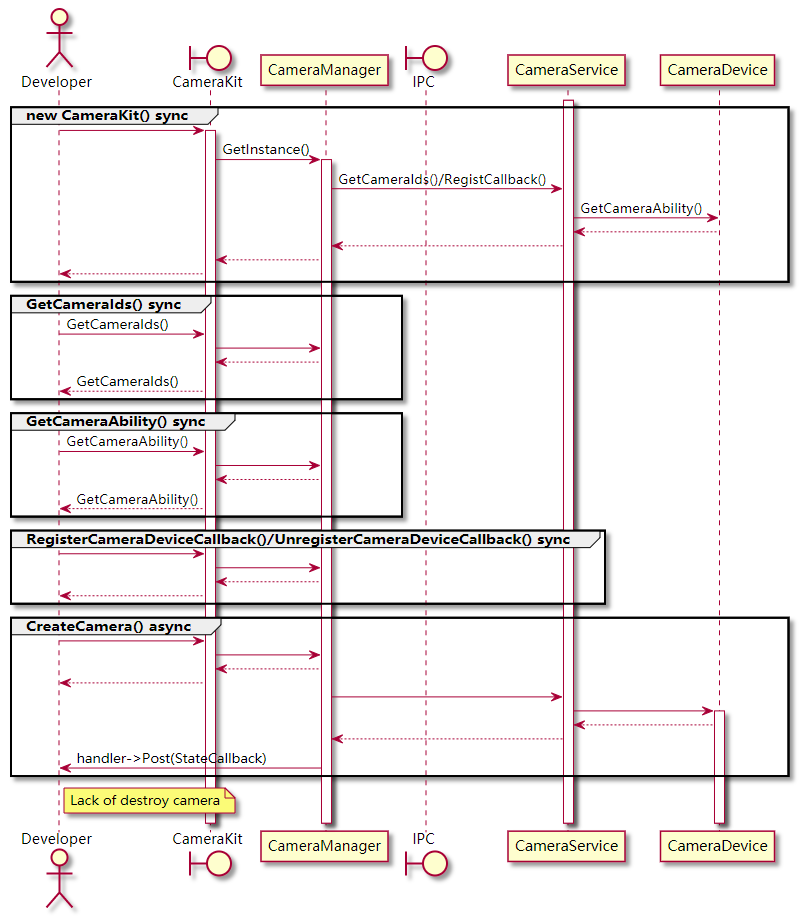
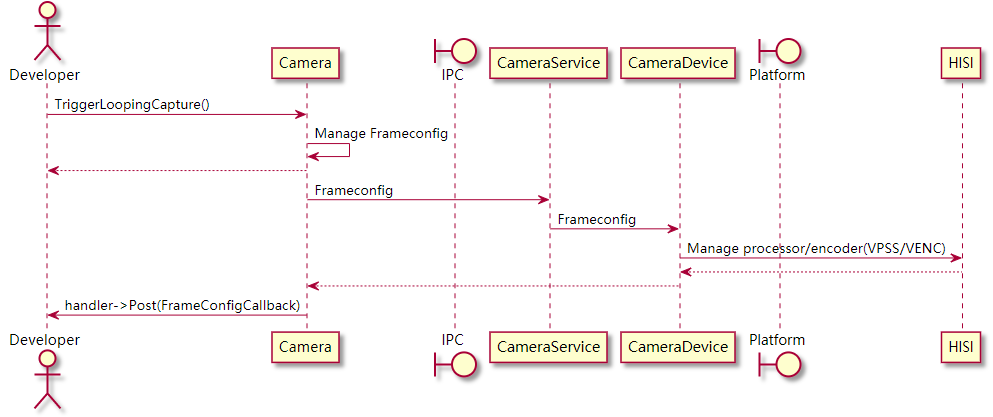

Overview¶
Basic Concepts¶
Camera is one of the services provided by the OpenHarmony multimedia subsystem. The camera module provides recording, preview, and photographing features and supports concurrent stream reading by multiple users.
It is considered good practice that you understand the following concepts before starting development:
Video frame
A video frame is formed by the stream data of a video image. Video data streams are formed by a series of image data arranged at a fixed time interval.
Frame per second (FPS)
FPS is used to represent the frame rate at which images are refreshed during video playback, or the number of frames per second during video playback. A higher frame rate means smoother video playback.
Resolution
Information about each image frame consists of pixels. The number of pixels in an image is presented by the resolution. For example, 1080p (1920 x 1080) indicates that the image width is 1920 pixels and the image height is 1080 pixels.
Working Principles¶
Multimedia services
Multimedia services are started by the Init process upon system startup, and media hardware resources (such as memory, display hardware, image sensors, and codecs) are initialized and allocated. During the initialization, the configuration file is parsed, which determines the upper limit of capabilities and resources of each service. Generally, the upper limit is configured by original equipment manufacturers (OEMs) in the configuration file. The following configuration items are available for the camera service during multimedia service initialization:
Memory pool: Memory blocks in the memory pool are accessed and released continuously by all multimedia services.
Image sensor: sensor type, resolution, ISP, and more
Image processor: resolution, bit rate, image inversion, and more
Image encoder: encoding format, bit rate, resolution, and more
Major classes
You can use the Camera class and its asynchronous callback classes to configure and access the camera functionalities. The three callback classes correspond to different asynchronous processing scenarios, as described in Table 1.
Table 1 Class description
Class
Description
Examples
Camera
Configures the static camera capability through the configuration class to use basic camera functionalities.
Photographing, video recording, and previewing
CameraDeviceCallback
Handles camera hardware state changes.
Available or unavailable
CameraStateCallback
Handles camera instance state changes.
Created or released
FrameStateCallback
Handles frame status changes.
Start and end of photographing, and frame rate changes
Stream transfer
A surface is the basic data structure for transferring audio and video data. A camera is generally used as the data producer of a surface and has specific consumers in different scenarios.
Camera preview and recording outputs are video streams, and photographing outputs are image frames. The outputs are transferred through the Surface class. A surface can transmit media information streams within and cross processes.
Take video recording as an example. You create a Recorder instance, obtain the surface of the Recorder instance, and then transfer the surface to the Camera instance. In this case, the Camera instance works as a producer to inject video streams to the surface, and the Recorder instance act as the consumer to obtain video streams from the surface for storage. In this case, you connect the recorder and camera through the surface.
Similarly, you can create a surface, implement consumer logic for it, and transfer it to the Camera instance. For example, transmit video streams over the network or save captured frame data as an image file.
The graphics module also obtains stream resources from the camera module through surfaces. For details, see development guidelines on Graphic.
Camera running process
Creating a camera
This process creates a Camera instance by CameraManager, binds the camera device to the server, and asynchronously notifies you of the successful creation. The following figure shows the time sequence between classes.
Figure 1 Sequence diagram for creating a camera

Taking a video/Previewing
This process creates a Camera instance via CameraKit, and configures frame attributes via FrameConfig for recording or previewing. The following figure shows the time sequence.
Figure 2 Sequence diagram for recording/previewing
